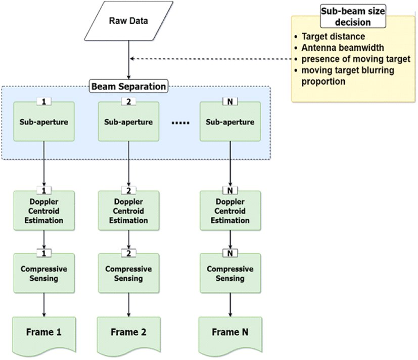

연구실적 · 국내전문학술지
근거리 이동 표적 Video SAR 영상 생성을 위한 압축센싱 기반 지상 이동 표적 탐지 기법
Compressive Sensing-Based Ground Moving Target Detection Technique for Near-Field Moving Target Video SAR

초록
Video SAR는 날씨 및 주·야간에 구애받지 않고 관심 지역 및 표적에 대한 지속적인 관측을 통해 관심 지역의 변화 및 표적의 이동 경로를 파악할 수 있다. 최근 도심지와 같이 관심 지역의 복잡도가 증가함에 따라 드론을 Video SAR의 탑재체로 활용하는 연구가 이루어지고 있다. 기존 플랫폼인 위성은 다중 안테나를 통한 정보를 이용하며, 표적과 플랫폼 사이의 거리가 충분히 멀어 표적의 속도를 근사화해 이동 표적을 탐지할 수 있었다. 그러나 드론은 표적과의 거리가 가까워 속도를 근사화할 수 없을 뿐 아니라, 탑재 무게의 한계가 있어 다중 안테나 사용에도 어려움이 있다. 따라서 본 연구에서는 단일 안테나를 탑재한 근거리 플랫폼에서 압축 센싱 기법을 통해 이동 표적을 탐지하는 과정을 연구한다. 최종적으로 모의 실험과 실제 데이터를 통해 압축 센싱을 통한 이동 표적의 Video SAR 영상 처리가 가능함을 검증한다.
인용
In-Mo Ban, Min-Jeong Moon, Hyun-Il Chun, Hwi-jeong Jo, Seok Won Lee, Myeong-jin Lee, Woo-Kyung Lee, “근거리 이동 표적 Video SAR 영상 생성을 위한 압축센싱 기반 지상 이동 표적 탐지 기법”, 한국전자파학회논문지, 제32권 12호, 2021년
BibTeX
@article{Ban_2021,
title={Compressive Sensing-Based Ground Moving Target Detection Technique for Near-Field Moving Target Video SAR},
volume={32},
ISSN={2288-226X},
url={http://dx.doi.org/10.5515/kjkiees.2021.32.12.1108},
DOI={10.5515/kjkiees.2021.32.12.1108},
number={12},
journal={The Journal of Korean Institute of Electromagnetic Engineering and Science},
publisher={Korean Institute of Electromagnetic Engineering and Science},
author={Ban, In-Mo and Moon, Min-Jeong and Chun, Hyun-Il and Jo, Hwi-jeong and Lee, Seok Won and Lee, Myeong-jin and Lee, Woo-Kyung},
year={2021},
month=Dec,
pages={1108–1118}
}